The medallion inscribed Edith Madeleine Fitzmaurice is Reg's mother, Edith Madeline Spencer, not his sister. She and Edward Dixon had four children. Three of them grew up.
In 1891 she was Edith Spencer, 22, a governess, born in Islington, living with her widowed mother Caroline, a lodging house keeper, at 15 Mornington Place, St Pancras. The house number may read 15b. Her father was Charles Spencer, a builder and contractor, already dead by then. Caroline witnessed the wedding at St Matthew's, Brixton, where Edith's age was written as 24. In 1911 the census says she was 38 and born at St Anne, Soho, and that four children had been born, of whom three were living. At the end of 1923 she came to London with Reg and Eileen. The passenger list of the P and O liner Bendigo, which called at Durban and Cape Town on its way from Australia, has Edith Fitzmaurice, 51, Baron, a student, 19, and Eileen, 16, landing in London on 28 December 1923, giving their address as 140A Clapham Road, London S.W. (the number is hard to read) and their home as South Africa. Edward Dixon had sailed back to the Cape from Southampton a week earlier. A Cape Times list of August 1923 has a Miss E. S. Fitzmaurice and an E. M. Fitzmaurice leaving Cape Town on the Bendigo, probably Eileen and her mother, but the dates do not match the December landing and the question is still open. She came back to England on the Saxon, landing at Southampton on 24 November 1925, aged 53 by her own account, and gave 55 Seymour Street, Higher Tranmere, Birkenhead as her address. The death index in 1929 says 61. The 1891 age and the death age agree with about 1866 to 1869. The later ages look younger. Her birth registration has not been found. A birth of Edith Maria Spencer at Islington in 1866 is a different family.
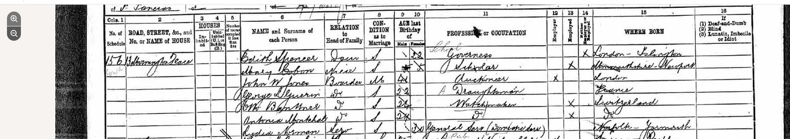
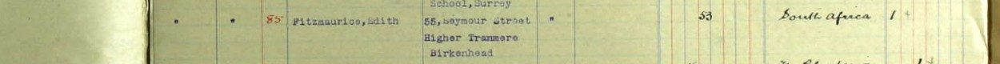
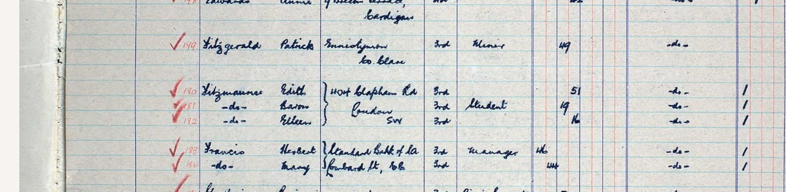
Caroline was probably with Edward and Edith in Brixton in 1901. She was born in Islington, about 1843 to 1849. An 1881 entry sometimes suggested for her is not used here. In April 1911 a Caroline Spencer, 67, a widow born in Islington, was keeping a lodging house at 6 Cathles Road, Balham Hill, with her niece May Cobon, 25, a shorthand typist. She was probably Edith's mother: her age, birthplace, widowhood and work all fit, though the page does not name Edith. Her death has not been found.
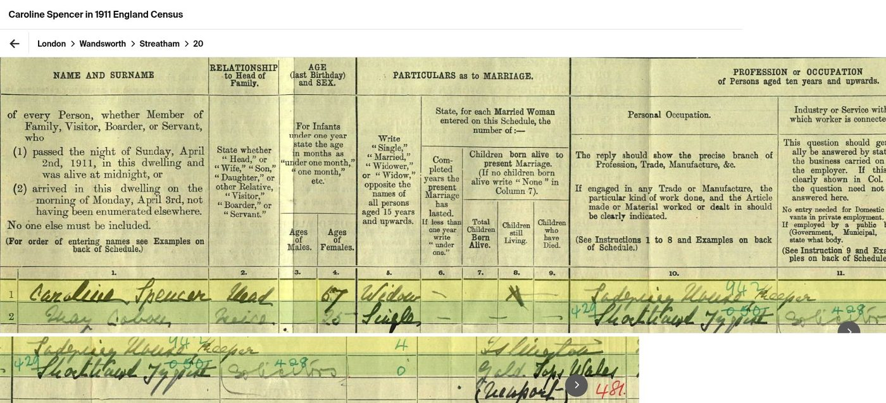
Mother's maiden name Spencer. Volume 1d, page 1075 for the birth, and volume 1d, page 707 for the death, aged under a year. She is the child who had died by 1911. She was named after her mother, and she is not the woman in the medallion.
The beach photograph is labelled Reg, Bob and their father Edward Dixon Fitzmaurice. It was probably taken about 1908 to 1910 on the Kent coast. Edward Robert, mother's maiden name Spencer, was registered in the Lambeth district in the June quarter of 1901, volume 1d, page 503. He is probably Bob. He was probably the boy of 15 who sailed to Cape Town with his mother in August 1916. No later record of him has been found in England. The family always believed that Bob stayed in South Africa, and the records now show that he did. On 30 October 1925, aged 24, he married Eileen Alice Yallop, 23, born in South Africa, at St George's Cathedral, Cape Town, by licence. He was a tramway engineer living at "Auleta", Three Anchor Bay, and she lived at 7 Bertram Road, Sea Point. One of the witnesses was J. A. Cartwright.
Their first son, Edward Scott FitzMaurice, was born on 29 April 1926 and baptised on 25 July 1926 in the parish of Woodstock, Cape Town. The family was then living at 17 Berkley Street, Gardens, Cape Town (the house number may be 14), and Bob was still a tramway engineer. The godparents were Joseph Allan Cartwright, Thomas Baker and Bertha Scott. Edward Scott died on 9 August 1935, aged 9; his death is known from an index and from the title of his estate file in the Cape Town archives.
Bob and Eileen had two more sons, both baptised in Cape Town: Lawrence John FitzMaurice in 1932 and Derek Anthony FitzMaurice in 1934.
Bob died at Port Elizabeth on 7 May 1981, aged about 80, and his death was registered in Cape Town on 27 May. The index to his death notice names his father, Edward Dickson (Dixon) FitzMaurice, his mother Edith, his wife Eileen Alice, and his sons Laurence John and Derek Anthony (indexed as "Serel Anthony"). The death notice image itself is not open to view. Two undated Cape Supreme Court civil cases that he brought against a Raymond William Wilson are probably his too.
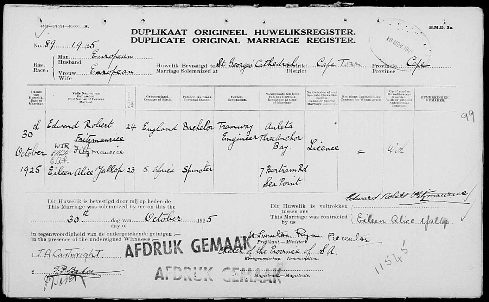
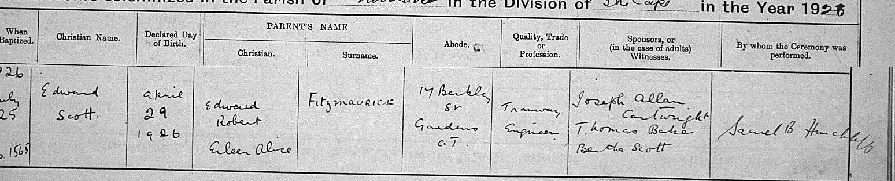
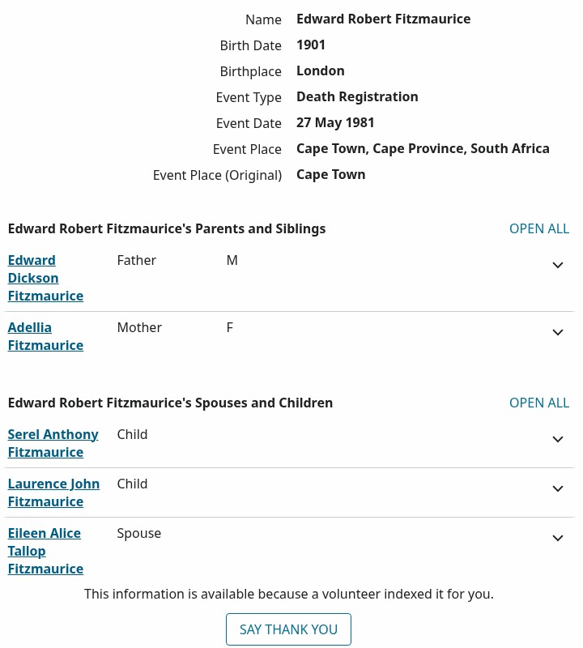
Baron is a forename, not a title. The birth was registered in the September quarter of 1904, Wandsworth, volume 1d, page 670, mother Spenser. In 1911 he was 6 and at school at Whitstable. He was probably the boy of 12 who sailed to Cape Town with his mother in August 1916. He came back to London with his mother and Eileen on the Bendigo, landing on 28 December 1923, when he was listed as Baron Fitzmaurice, a student, aged 19. Early in 1925 Reg made a short trip to Canada. On 7 February 1925 a Baron Fitzmaurice, a clerk, of 7 North Lane, Clapham Common, sailed from Liverpool on the Canadian Pacific liner Montrose. On 15 February the Canadian immigration officers at Saint John, New Brunswick, recorded him as Baron Reg Fitzmaurice, 20, single, born in London, a clerk who meant to take up farming, going to the Y.M.C.A. in Saint John. His nearest relative at home was an E. Fitzmaurice of 7 North Side, Clapham. Three weeks later he was on his way back: he left Saint John on the Marburn on 6 March and landed at Southampton on 14 March 1925, now listed as "Banon Reg." Fitzmaurice, 20, a salesman, going to 7 North Street, Clapham Common. The forename Baron, his age, his birth in London and the Clapham Common address on all three lists make it very likely that this was Reg. The British list gives his age as 30, which is probably a slip for 20. Why he went, and why he came home so soon, is not known. No record places him in Canada before February 1925: he is not in the 1921 census of Canada, and no earlier sailing or arrival has been found. Nobody in the family seems to have heard of the trip. From then on the electoral registers follow him: 26 Turret Grove, Clapham, in 1925 and 1926; 34 Blythe Road, Hammersmith, from 1931 to 1933; 113 Bourne Avenue, Harlington, in 1936 and 1937; and from 1938 42 Nestles Avenue, Hayes, where he lived until he died in 1977. Reg probably married again after Lilian's death in 1947: from 1949 the electoral registers also name an Elizabeth C. Fitzmaurice, probably his second wife. Nothing more is known about her yet. He probably married Lilian Maud Mary Bennett in the December quarter of 1927, Hammersmith, volume 1a, page 661. He gave Patricia away on 11 February 1950. The death was registered at Hillingdon. The probate calendar places him at Hayes, with an estate of 24,427 pounds. A bow-tie studio portrait has no name on it, and it is not identified as him.
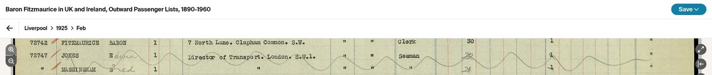
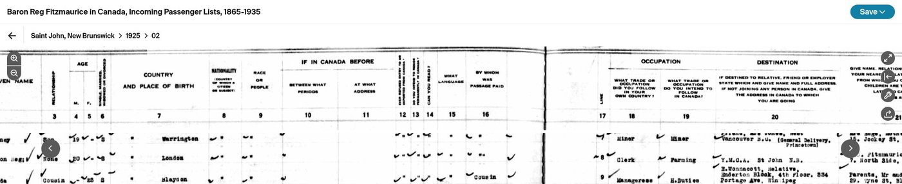
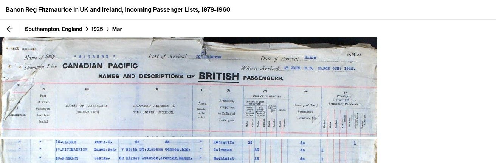
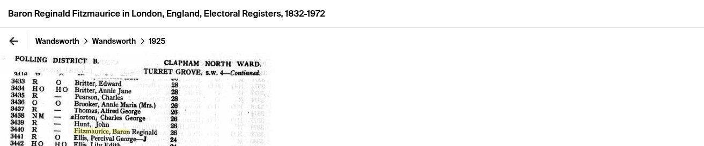
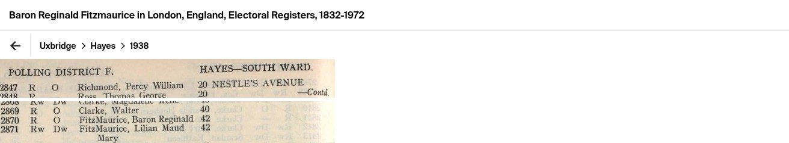
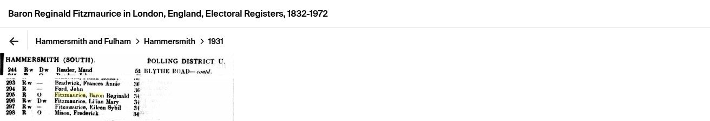
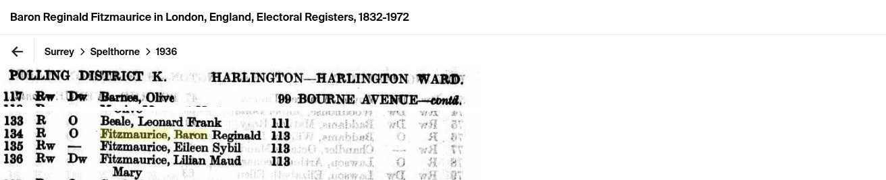
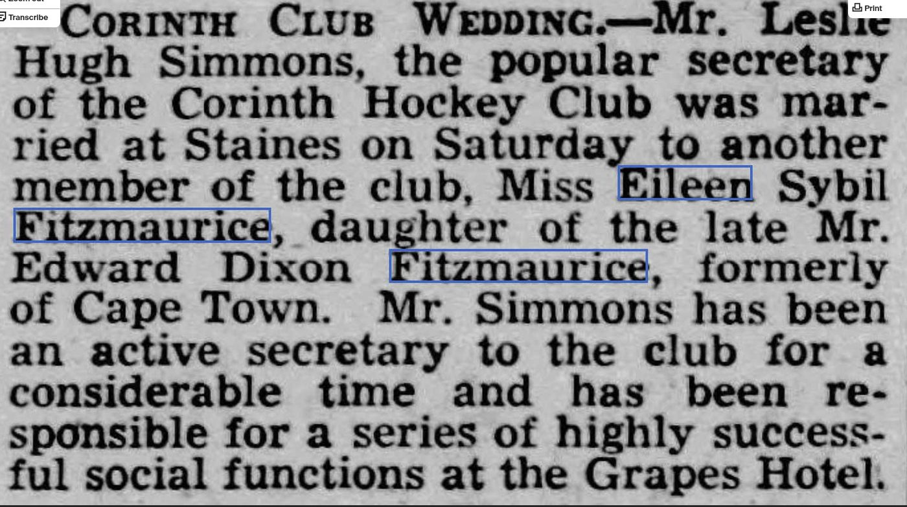
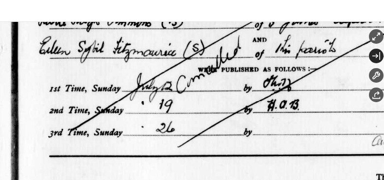
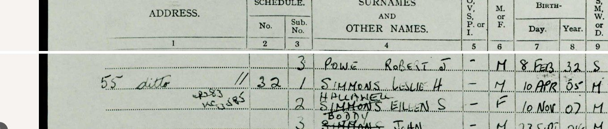
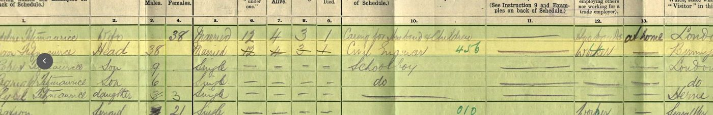
The youngest of Edward Dixon and Edith's children, Eileen was 3 at Whitstable in 1911. She probably sailed to Cape Town with her mother and brothers in August 1916, aged 8, and the family photo labelled Auntie Babs, South Africa shows her as a girl there. She came back to London from South Africa with her mother and Reg on the Bendigo, landing on 28 December 1923, aged 16. She married Leslie Hugh Simmons, secretary of the Corinth Hockey Club, at Staines in the summer of 1936. The newspaper named her as the daughter of the late Edward Dixon Fitzmaurice, formerly of Cape Town. For several years Eileen lived with her brother Reg and his wife Lilian: the electoral registers list the three of them at 34 Blythe Road, Hammersmith, in 1931 and 1933, and at 113 Bourne Avenue, Harlington, in 1936, the year she married. Banns for her marriage to Leslie Simmons were read at Harlington in July 1936, but the entry is marked cancelled; the wedding itself was reported in the Buckinghamshire Advertiser that September. By 1939 she and Leslie lived at 55 Bourne Avenue, Hayes, on the same road where she had lived with Reg. As Auntie Babs she was at Pat's wedding in 1950 with Uncle Leslie. In 1984 she married Ralph Hallawell in Kent, and she probably died at Canterbury in early 1996.
The parents of Edward Dixon are on the Falcke page. The citations are on the sources page.